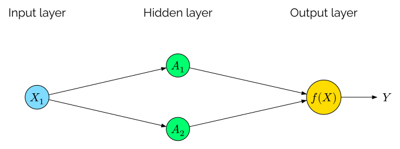
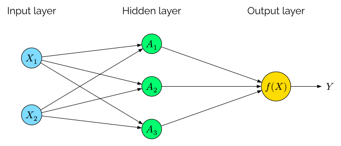
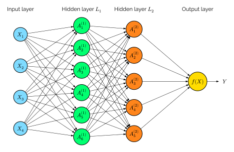

Machine Learning with Economic and Financial Applications
Lecture 5: Neural networks
Adrian Adermon
2025-05-16
Single-layer (shallow) neural network
Model structure
Inputs $X_{j}$ $\rightarrow$ activations $A_{k}$ $\rightarrow$ output $Y$
Output: \(f(X) = \beta_0 + \sum_{k=1}^K \beta_k A_k\)
Activations: \(A_k = h_k(X) = g \left(w_{k0} + \sum_{j=1}^p w_{kj} X_j \right)\)
$g(\cdot)$ nonlinear activation function
Full model
\[ f(X) = \beta_0 + \sum_{k=1}^K \beta_k g \left(w_{k0} + \sum_{j=1}^p w_{kj} X_j \right) \]Activation functions
Rectified linear unit (ReLU)
Sigmoid
\[\scriptsize g(z) = \begin{cases} 0 & \text{if } z<0 \\ z & \text{otherwise} \end{cases}\]
\[\scriptsize g(z) = \frac{e^z}{1+e^z} = \frac{1}{1+e^{-z}}\]
Simple illustration
Shallow neural network
Two input variables
Shallow neural network
Single layer (shallow) neural network

Deep neural network
Deep neural network

Model structure
Inputs $X_{j}$ $\rightarrow$ activations $A^{(1)}_{k}$ $\rightarrow$ activations $A^{(2)}_{\ell}$ $\rightarrow$ output $Y$ Hidden layer $L_1$ \[A^{(1)}_k = h^{(1)}_k(X) = g \left(w^{(1)}_{k0} + \sum_{j=1}^p w^{(1)}_{kj} X_j \right)\] Hidden layer $L_2$ \[A^{(2)}_{\ell} = h^{(2)}_{\ell}(X) = g \left(w^{(2)}_{\ell 0} + \sum_{k=1}^{K_1} w^{(2)}_{\ell k} A^{(1)}_k \right)\] Output layer \[f_m(X) = Pr(Y=m \mid X) = \frac{e^{Z_m}}{\sum_{\ell = 0}^M e^{Z_\ell}}\] where \[Z_m = \beta_0 + \sum_{\ell = 1}^{K_2} \beta_{m\ell}^{(2)}(X) = \beta_0 + \sum_{\ell=1}^{K_2} \beta_{m\ell} A_{\ell}^{(2)} \]RGB layers


Image data as matrix
\[ \tiny \begin{bmatrix} 1 & 1 & 1 & 1 & 1 & 0.24 & 0.24 & 0.24 & 0.24 & 1 & 1 & 1 & 1 & 1 \\ 1 & 1 & 1 & 0.24 & 0.24 & 1 & 1 & 1 & 1 & 0.24 & 0.24 & 1 & 1 & 1 \\ 1 & 1 & 0.24 & 1 & 1 & 1 & 1 & 1 & 1 & 1 & 1 & 0.24 & 1 & 1 \\ 1 & 0.24 & 1 & 1 & 1 & 1 & 1 & 1 & 1 & 1 & 1 & 1 & 0.24 & 1 \\ 1 & 0.24 & 1 & 1 & 1 & 1 & 1 & 1 & 1 & 1 & 1 & 1 & 0.24 & 1 \\ 0.24 & 1 & 1 & 1 & 0.04 & 1 & 1 & 1 & 1 & 0.04 & 1 & 1 & 1 & 0.24 \\ 0.24 & 1 & 1 & 1 & 1 & 1 & 1 & 1 & 1 & 1 & 1 & 1 & 1 & 0.24 \\ 0.24 & 1 & 1 & 1 & 1 & 1 & 1 & 1 & 1 & 1 & 1 & 1 & 1 & 0.24 \\ 0.24 & 1 & 1 & 1 & 0.04 & 1 & 1 & 1 & 1 & 0.04 & 1 & 1 & 1 & 0.24 \\ 1 & 0.24 & 1 & 1 & 1 & 0.04 & 0.04 & 0.04 & 0.04 & 1 & 1 & 1 & 0.24 & 1 \\ 1 & 0.24 & 0.93 & 1 & 1 & 1 & 1 & 1 & 1 & 1 & 1 & 0.93 & 0.24 & 1 \\ 1 & 1 & 0.24 & 0.93 & 0.93 & 1 & 1 & 1 & 1 & 0.93 & 0.93 & 0.24 & 1 & 1 \\ 1 & 1 & 1 & 0.24 & 0.24 & 0.93 & 0.93 & 0.93 & 0.93 & 0.24 & 0.24 & 1 & 1 & 1 \\ 1 & 1 & 1 & 1 & 1 & 0.24 & 0.24 & 0.24 & 0.24 & 1 & 1 & 1 & 1 & 1 \\ \end{bmatrix} \]Convolution example

\(\scriptsize \ast \begin{bmatrix} -1 & -1 & -1 \\ 0 & 0 & 0 \\ 1 & 1 & 1 \end{bmatrix} = \)
\(\scriptsize \ast \begin{bmatrix} -1 & 0 & 1 \\ -1 & 0 & 1 \\ -1 & 0 & 1 \end{bmatrix} = \)